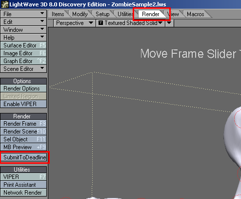
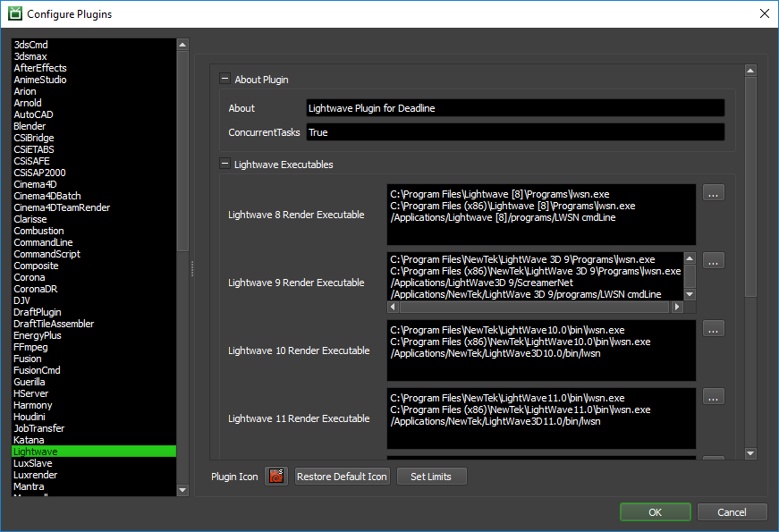

Lightwave¶
Job Submission¶
You can submit jobs from within Lightwave by installing the integrated submission script, or you can submit them from the Monitor. The instructions for installing the integrated submission script can be found further down this page.
To submit from within Lightwave, select the Render Tab and click the SubmitToDeadline button on the left.
Submission Options¶
The general Deadline options are explained in the Job Submission documentation, and the Draft/Integration options are explained in the Draft and Integration documentation. The Lightwave specific options are:
Content Directory: The Lightwave Content directory. Refer to your Lightwave documentation for more information.
Config Directory: The Lightwave Config directory. Refer to your Lightwave documentation for more information.
Force Build: For Lightwave 9 and later, force rendering in 32 bit or 64 bit.
Use FPrime Renderer: If you want to use the FPrime renderer instead of the normal Lightwave renderer.
Use ScreamerNet Rendering: ScreamerNet rendering keeps the Lightwave scene loaded in memory between frames, which reduces overhead time when rendering.
Notes:
At the moment, there is no support for rendering animation (movie) files. Any animation options will be ignored, and an RGB output and/or Alpha output must be specified in order to submit to Deadline.
In the Scene file, some versions of Lightwave use a number to specify the output file type and some use the actual file type extension (.tif, .tga, etc). In the versions that use the actual file type extension, individual rendered images can be viewed from the Monitor task list by right-clicking on them.
For information on how to properly set up your network for Lightwave rendering, see the ScreamerNet section of your Lightwave documentation. When Lightwave is properly configured for ScreamerNet rendering, it will then render properly through Deadline.
Cross-Platform Rendering Considerations¶
In order to perform cross-platform rendering with Lightwave, you must setup Mapped Paths so that Deadline can swap out file paths where appropriate. You can access the Mapped Paths Setup in the Monitor while in power user mode by selecting Tools -> Configure Repository. You’ll find the Mapped Paths Setup in the list on the left.
Note, if the executable supports a MAJOR.MINOR.REVISION (9.0.123) numbering system in its path, then you will need to configure the explicit exe path to the particular revision that you have installed on your machines. Deadline does not track every possible revision available or indeed where it might be custom installed to, so a studio should verify their exe paths are correct for each application version they choose to use with Deadline. Multiple exe paths can still be declared and the first one that is found on a particular Worker on a particular platform will be used from the exe list.
From here, you can set the list of executables that will be used for rendering. To get a more detailed description of each setting, simply hover the mouse cursor over a setting and a tool tip will be displayed.
Integrated Submission Script Setup¶
This section describes how to install the integrated render job submission script for Lightwave. This script allows for submitting Lightwave render jobs to Deadline directly from within the Lightwave editing GUI. Note that on macOS, this script is only supported by the Universal Binary versions of Lightwave.
Manual Installation¶
Click the Utilities tab. Find the Plugins section on the right and click the Add Plugins button. Select the DeadlineLightwaveClient.ls file found in
[Repository]\submission\Lightwave\Client.Click the Edit menu in the top-left corner and select the Edit Menu Layout… option.
In the Command list on the left, expand the Plugins section in Lightwave 8 or the Additional section in Lightwave 9 and later, and find the DeadlineLightwaveClient plugin. Drag and drop it into the Menus list in the Render section. Click Done.
Verify Installation¶
Click the Render tab. There should be a DeadlineLightwaveClient button on the right. If there is not, check to make sure you placed the DeadlineLightwaveClient plugin in the correct section.
FAQ¶
Which version of Lightwave are supported?
Lightwave versions 8 and later are supported. On macOS, both the PPC and Universal Binary versions work. However, the integrated Lightwave submission script only works with the Universal Binary version.
Lightwave 10 integrated submitter crashes with Deadline 5.0 and older on macOS.
Due to an API change in LightWave, previous integrated submission scripts will not work under LightWave 10 on macOS. This is fixed in Deadline 5.1.
Does Deadline support the FPrime renderer?
Yes. FPrime has its own net rendering application called wsn.exe, which can be configured in the Lightwave plugin configuration. When you submit your Lightwave job, just make sure to have the Use FPrime Renderer option checked.
When rendering with FPrime, I get an error that it can’t create a temporary config directory.
This can occur when the job is using a shared Config folder on the network. FPrime tries to create a temporary config directory in this shared folder, and this can fail if many Workers are trying to access that Config folder at the same time.
To avoid this problem, we suggest enabling the FPrime Use Local Config option in the Lightwave Plugin Configuration, which can be accessed from the Monitor while in Power User mode by selecting Tools -> Configure Plugins. When this option is enabled, Deadline will copy the contents of the shared Config folder to a local folder, and this is the Config folder that FPrime will use.
What does the Use ScreamerNet Rendering option in the submission dialog do?
When using ScreamerNet rendering, the Lightwave scene is kept loaded in memory between each frame for a job, which greatly reduces the overhead of having to load the scene at the beginning of each frame.
Does Deadline work if one renames the Lightwave configuration files in the configuration directory?
Currently, Deadline assumes that you have not renamed the Lightwave configuration files in the Lightwave configuration directory.
Error Messages and Meanings¶
This is a collection of known Lightwave error messages and their meanings, as well as possible solutions. We want to keep this list as up to date as possible, so if you run into an error message that isn’t listed here, please visit the Thinkbox Help Centre and let us know.
Currently, no error messages have been reported for this plugin.

{kind=link}
{kind=link}
{kind=link}
{kind=link}
{kind=link}
{kind=link}
{kind=link}